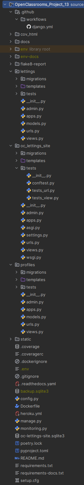

Description
Orange County Lettings is a startup in the real estate rental sector. The startup is currently expanding rapidly in the United States. The Orange County Lettings teams developed the OC_Letting_Site web application and the new scaled version has just been released.
Summary
The new version has been scaled using a modular architecture.
What we have done :
Redesign of the modular architecture in the Git platform repository
Reduction of various technical debts on the project
Addition and deployment of a CI/CD pipeline
Application monitoring and error tracking via Sentry
Creation of the application’s technical documentation using Read The Docs and Sphinx
The application must :
allow the users to view available rentals and all the registered profiles.
Architecture
Overview

Modular architecture
The architecture has been optimized by reducing the technical debts from the previous monolithic design.
The code has been :
reorganized into several separate Django applications
reorganized into application-specific HTML templates folders
This optimization has improved the flexibility, maintainability, and scalability of the code.
Finally, each app has its own :
views module
urls module
templates folder
test folder with several test modules for models, views and urls